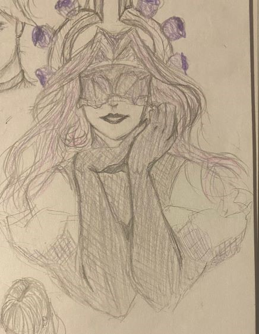
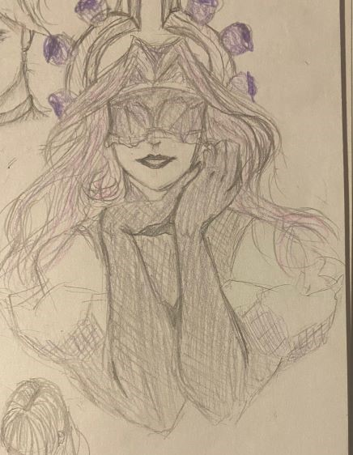

Things about me
There are a lot of things that I do/used to do and things that I like so this is a summary of them.
Sports
I used to play a lot of different sports growing up including track & field, soccer, volleyball, figure skating, and ballet
My Music Taste
I like all kinds of music but some of my top artists include:
Justin Timberlake(mostly his 2006 era and before), Childish Gambino, My Morning Jacket(I went to their concert last November, it was amazing), MARINA, Roan Martin, Jhariah, and many more.
There are also artists where I only enjoy one or two songs
Drawing
I got into drawing as early as 2nd grade and ever since I've only improved. I only do it as a hobby and when the motivation/inspiration is high but regardless I enjoy it a lot.
Here are some drawings I've done. I mostly draw traditional and attempt to draw digitally but it never ends up good.
 
